Bienvenue dans l’atelier Ludd.
Notre collectif imagine des ateliers d’expérimentation graphique et de bidouille ludd-ique itinérent.
À l’heure où les objets technologiques sont toujours plus omniprésents, complexes et
opaques, nous nous essayons à déjouer leurs obsolescences et à nous amuser de leurs
contraintes. Nous proposons un espace pour s’emparer d’objets électroniques obsolètes
et les refonctionnaliser.
De Ned Ludd aux Escargots, nous avons exploré des détours, multiplié les croisements et les bifurcations autour d’une simple proposition : ralentir et faire ensemble.
Cette exposition de diplôme est une invitation à parcourir près de six mois de recherches, de rencontres, de collectes, d’expérimentations et de créations ludd-iques. Elle rassemble nos machines collectives, les ateliers qui les ont vues naître et la recherche qu’elles ont nourrie.
Les ateliers Ludd, c’est : récupérer, ouvrir, comprendre, transformer, bidouiller et créer collectivement !
Nous proposons des espaces pour s’emparer des objets électroniques obsolètes, pour les refonctionnaliser et les détourner de manière joyeuse et collective. Un moment pour expérimenter et transmettre des savoirs autour des enjeux low-tech. Une invitation à faire autrement, à oser les alternatives et à multiplier les pratiques.
Explorer les chemins obliques plutôt que les lignes droites. Promis, ça vaut le détour !
Angèle, Lucie et Yann.
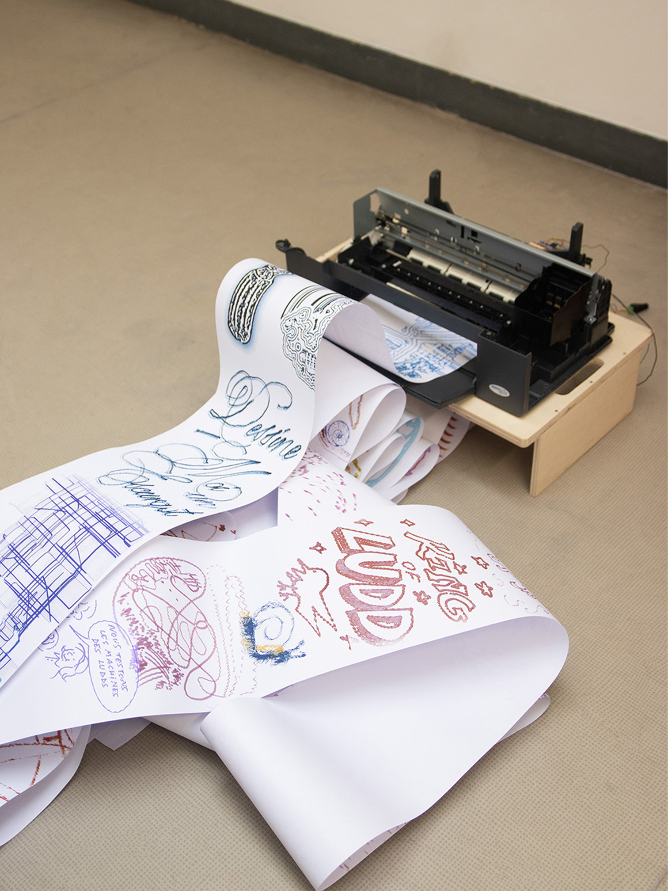
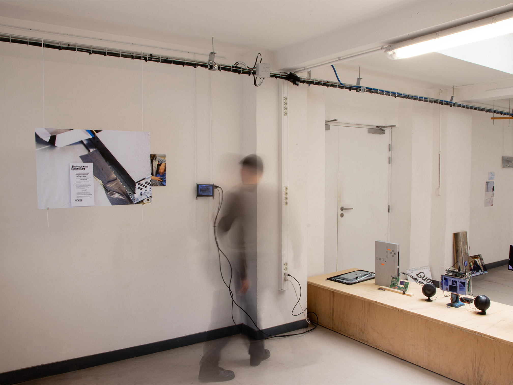
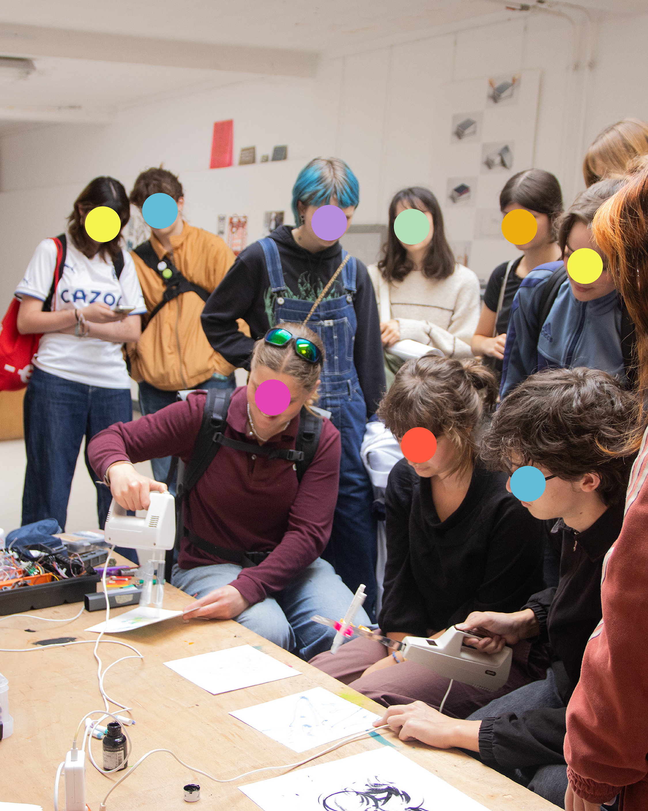
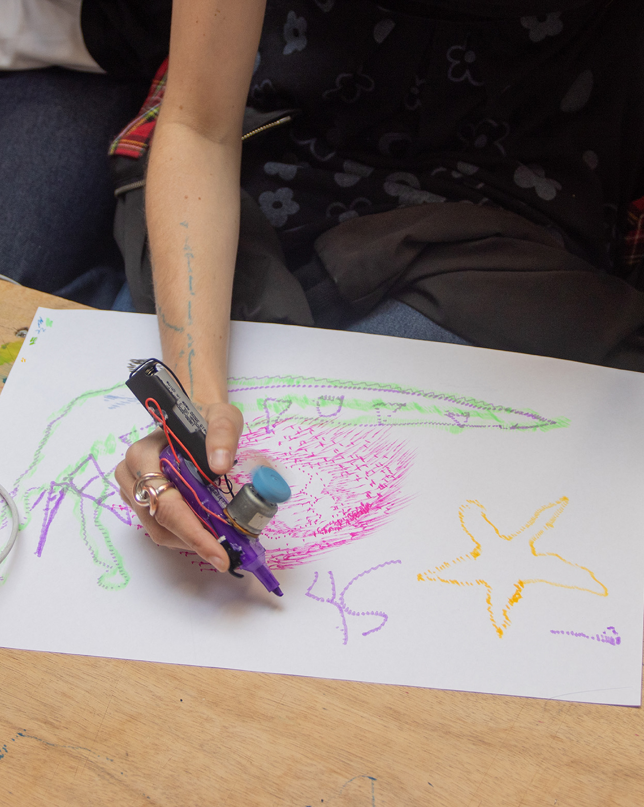
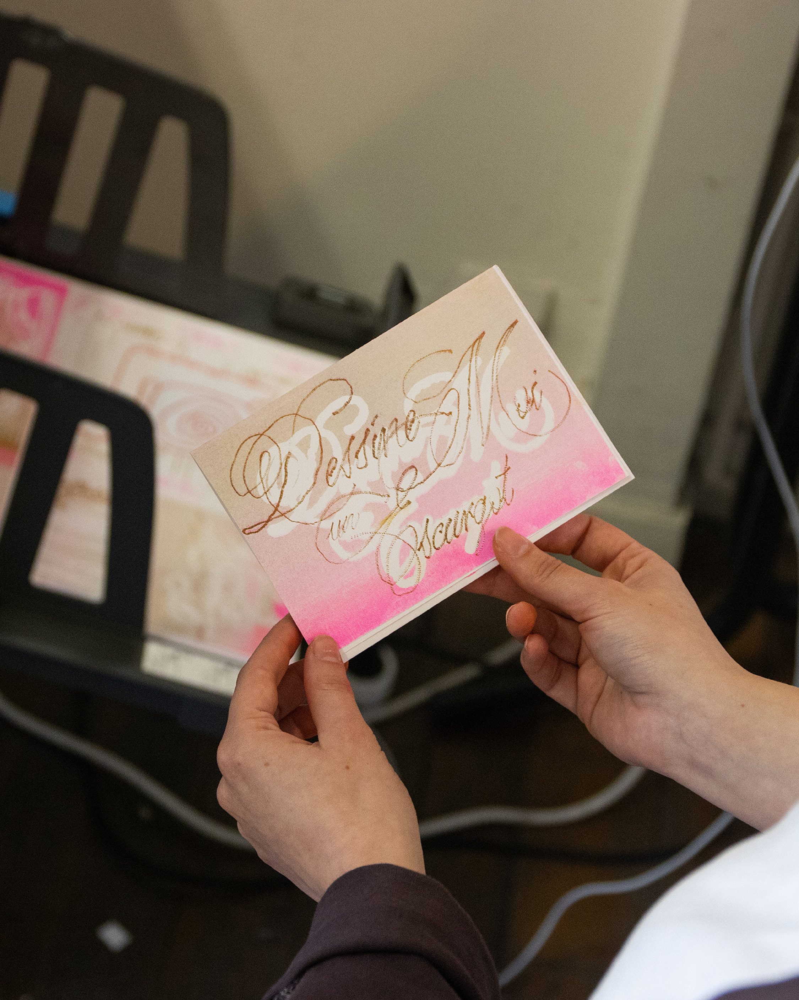
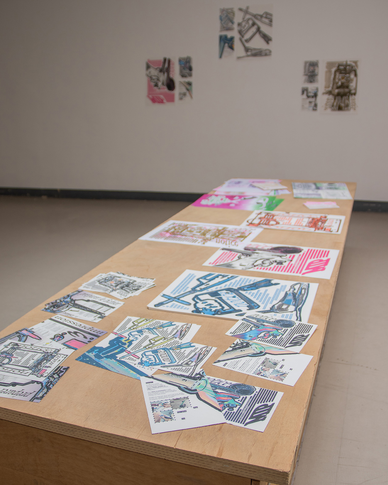
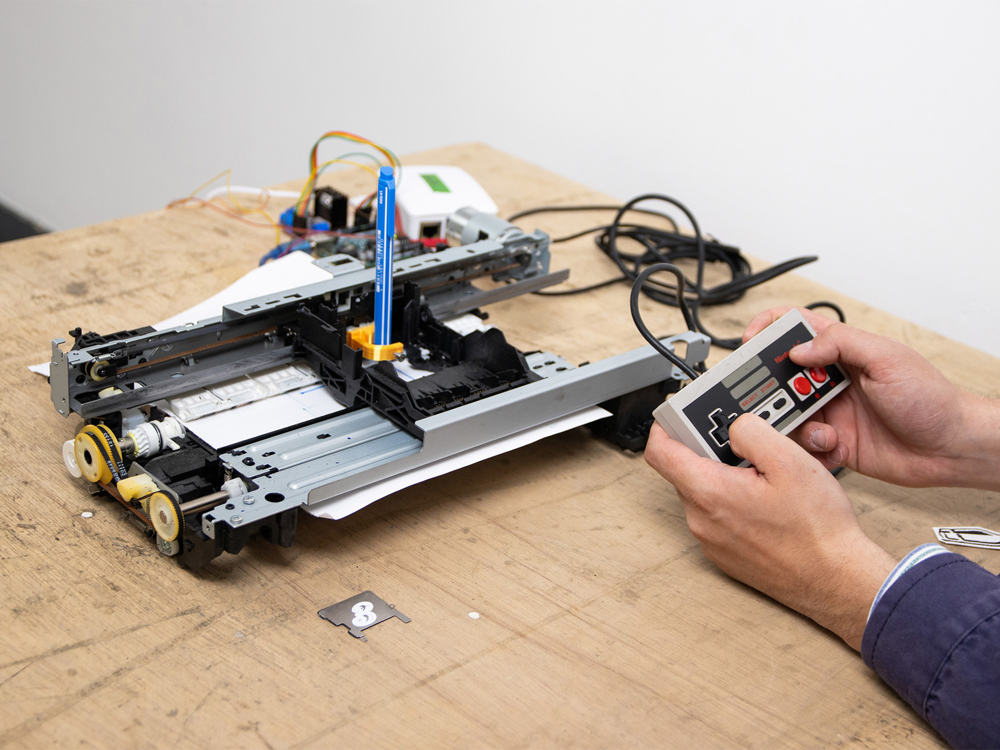
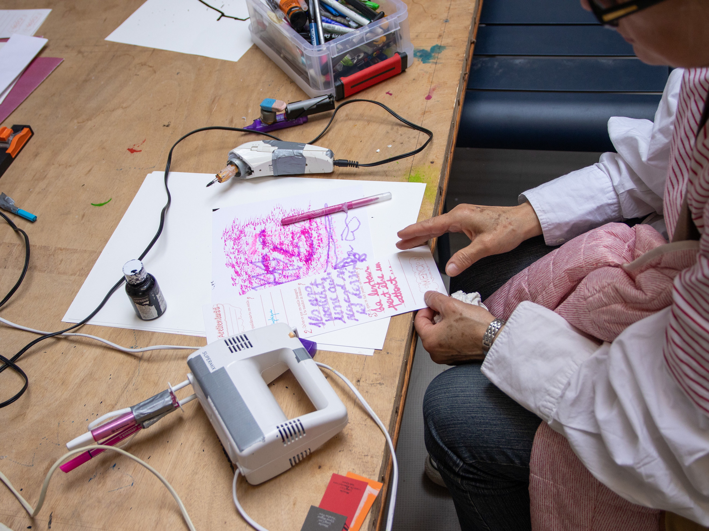
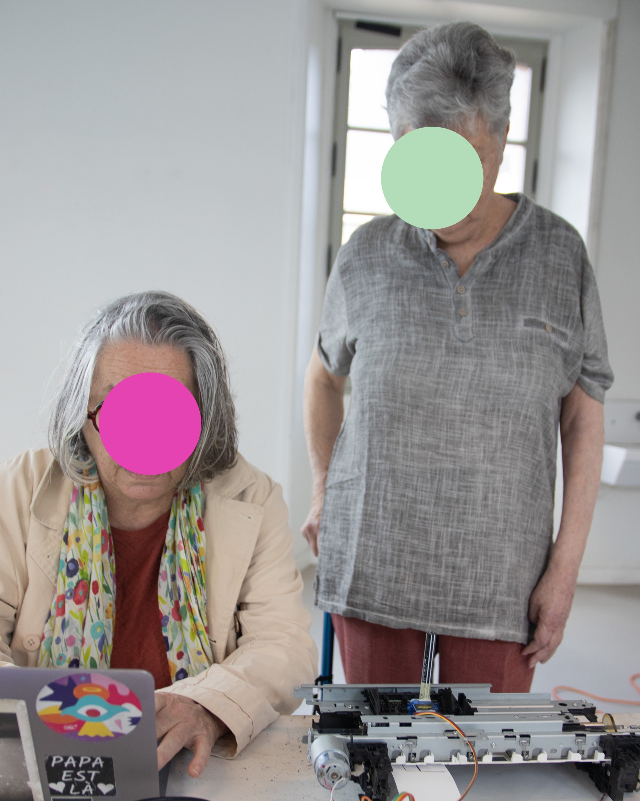
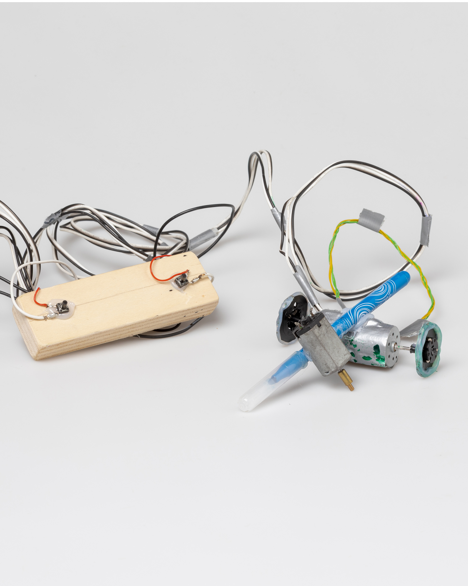
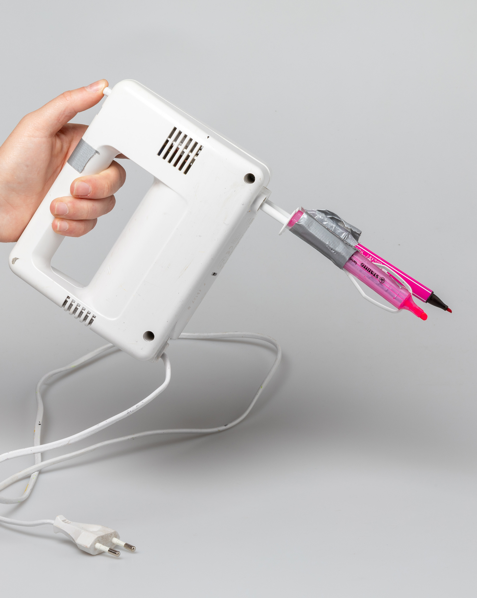
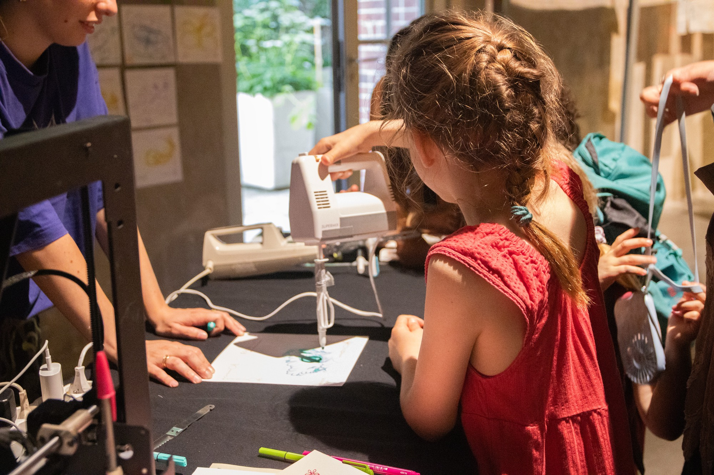